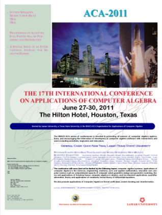

Links


ACA 2011
The
17th International
Conferences on
Applications of Computer Algebra
June 27-30, 2011
Houston, Texas, U.S.A.
Program

Conference
Site
The ACA series of conferences is devoted to promoting the applications and development of Computer Algebra and Symbolic Computation. We bring together developers of computer algebra systems and packages with researchers and users including scientists, engineers, educators.
Topics include computer algebra and symbolic computation in engineering, the sciences, medicine, pure and applied mathematics, education, communication and computer science.
Special For This Conference
Invited Speakers & Topical Tutors:
Reinhard Laubenbacher (Virginia Tech) Algebraic models in systems biology
Seth Sullivant (NCSU) Algebraic Statistics
Franz Winkler (RISC-Linz) Algebra + Geometry ==> Differential Equation Solving
E. Kaltofen (NCSU) Fast Estimates of Hankel Matrix Condition Numbers and Numeric Sparse Interpolation
Panel Discussion on trends in symbolic computation development and applications
Post-Conference Collection of selected papers will be published as Special Issues of the Journal of Symbolic Computation. Submission of full papers: August 31, 2011.
Trip to NASA's space center.
Local Information
General Chair: QUOC-NAM TRAN, Lamar (Texas State) University
Program Chairs: Quoc-Nam Tran (Lamar) and Stanly Steinberg (New Mexico)
Scientific Committee:
Alkiviadis Akritas, Michel Beaudin, Bruno Buchberger, Jacques Calmet, Victor Edneral, Victor Ganzha, Vladimir Gerdt, Mark Giesbrecht, Hoon Hong, David Jeffrey, Erich Kaltofen, Ilias Kotsireas, Bernhard Kutzler, Robert H. Lewis, Richard Liska, Winfried Neun, Matu-Tarow Noda, Gilles Picard, Kathleen Pineau, Bill Pletsch, Eugenio Roanes-Lozano (Chair), Tateaki Sasaki, Yosuke Sato, Tony Shaska, Margarita Spiridonova, Stanly Steinberg, Agnes Szanto, Quoc-Nam Tran, Nikolay Vasiliev, Stephen Watt, Michael Wester, Wolfgang Windsteiger

Local Organizing Committee: Valentin Andreev (Chair), Taylor White, and Paul van der Maas
Academic Sessions
Call for Special Sessions
This conference is structured as a series of Special Sessions (see Format for more details). If you wish to organize a Special Session at ACA 2011, send your proposal to the Program Chairs, which should includes:
the title of the Special Session,
the contact information of the organizers,
a short abstract stating the purpose of the Session.
You will receive a quick response to your Session proposal once it has been evaluated by the Program Chairs (in collaboration with the ACAWG). Accepted Special Sessions will be listed here. Organizers of Special Sessions are expected to maintain a website and are responsible for soliciting talks and contributions to their Session. Sessions are expected to contain at least 4 talks. The scientific quality of a Special Session is the sole responsibility of the session organizers.
Deadline for Session Proposals: March 15, 2011. (Session Organizers are encouraged to organize their sessions as soon as possible. Also, financial supports will be on the first-come-first-serve manner.)
It is our intention to at least have the following sessions:
1. Computer Algebra in Education
2. Interaction Between Computer Algebra and Interval Computations
3. Elimination Theory and Applications
4. Differential and integral symbolic-numeric algorithms
5. Computer Algebra for Dynamical Systems and Celestial Mechanics
6. Symbolic and Numeric Computation
7. Algebraic and Algorithmic Aspects of Differential and Integral Operators
8. High-Performance Computer Algebra
9. Nonstandard Applications of Computer Algebra
11. Computer Algebra in Algebraic Topology and its applications
12. Applications and Libraries development in Derive and TI-Nspire

Submission of full papers for the Special Issues of the Journal of Symbolic Computation: August 31, 2011.
Application for Financial Support :
With the current budget crisis, it has become very hard to find financial support for the conference. We have worked extremely hard to secure support for 12-15 graduate students (Master and PhD students). Please inform your student(s) to apply as soon as possible using the link.Registration
Register for the conference as early as possible will help us to schedule for the conference better. (link)Hotel Reservation (Click Here!) or call the hotel
Hilton Hotel Southwest Houston. (6780 Southwest Freeway, Houston, Texas, United States 77074-2102 Tel: 1-713-977-7911 Fax: 1-713-977-6310).
Code work is "Lamar University ACA-2011".
Discount until June 1, 2011: $69.00 with Breakfast included.
After the cut-off date: Full price of $98.00 + tax
Deadlines:
Proposals for organizing a special session: March 15, 2011. (Session Organizers are encouraged to organize their sessions as soon as possible. Also, financial supports will be on the first-come-first-serve manner.)
Submission of full papers or talks at the conference: May 1, 2011. It is VERY important that you have the name of the session before the title of the paper (e.g., “Computer Algebra in Education: Using Maple to improve student's learning in calculus") When you submit a paper or talk through https://www.easychair.org/account/signin.cgi?conf=aca2011
Notification of acceptance for the conference: June 1, 2011.